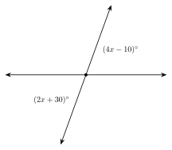
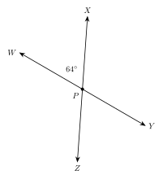

1.3 Complementary, Supplementary, and Vertical Angles
- Find the complement and the supplement of an angle
- Name adjacent angles, linear pairs, and vertical angles
- Explain why vertical angles are equal
- Write and solve equations to find missing angles
Warm-Up
1. 30° + 45° = 75°
2. 2x = 40, x = 20
3. 8x + 4 = 180, x = 22
1.3.1Complementary and Supplementary Angles
- Two angles are complementary if their measures add to 90°.
- Two angles are supplementary if their measures add to 180°.
- The angles do not have to touch.
- Complement of x°: (90 − x)° Supplement of x°: (180 − x)°

a. The complement of 38°. 90 − 38 = 52°
b. The supplement of 38°. 180 − 38 = 142°
c. The complement and the supplement of x°. (90 − x)° and (180 − x)°
a. The complement of 63°. 27°
b. The supplement of 63°. 117°
c. The supplement of 105°. 75°
1.3.2Adjacent Angles and Linear Pairs
- Adjacent angles share a vertex and a side. They do not overlap.
- A linear pair is two adjacent angles whose outside sides are opposite rays.
- The angles in a linear pair are supplementary: they add to 180°.
Figure 1, ∠1 and ∠2: Yes. They share vertex B and side BD and do not overlap.
Figure 2, ∠ABD and ∠ABC: No. They overlap.

∠1 and ∠2 are a linear pair.
m∠1 + m∠2 = 180°
m∠2 = 180 − 62 = 118°
180 − 47 = 133°
1.3.3Vertical Angles
- Vertical angles are the angles across from each other when two lines cross.
- Vertical angles are equal.
- Name the vertical pairs: ∠1 and ∠3, ∠2 and ∠4.
∠1 and ∠2 are a linear pair: m∠2 = 120°
∠3 is vertical to ∠1: m∠3 = 60°
∠4 is vertical to ∠2: m∠4 = 120°
m∠1 = 180 − 135 = 45°. m∠3 = 45°. m∠4 = 135°.
The top angle is a linear pair with x: 180 − x
The left angle is a linear pair with the top angle: 180 − (180 − x) = x
So the left and right angles are equal.
1.3.4Solving for x
| Pair | Rule | Equation |
|---|---|---|
| complementary | add to 90° | angle + angle = 90 |
| supplementary or linear pair | add to 180° | angle + angle = 180 |
| vertical | equal | angle = angle |

The angles are complementary.
Equation: (3x + 5) + 2x = 90
Solve: 5x + 5 = 90, x = 17
Angles: 56° and 34°
8x + 18 = 90, so x = 9. The angles are 51° and 39°.

Vertical angles are equal.
Equation: 4x − 10 = 2x + 30
x = 20 Each angle: 70°
The other two angles: 110°
6x + 1 = 4x + 31, so x = 15. Each angle is 91°.
Her mistake: She used the rule for a linear pair. Vertical angles are equal.
Check her answer: 3(25) + 10 = 85 and 5(25) − 30 = 95. They are not equal.
Correct equation: 3x + 10 = 5x − 30 x = 20

∠AEC and ∠CEB are a linear pair:
(3x + 5) + (2x + 15) = 180
x = 32 m∠AEC = 101° m∠CEB = 79°
∠BED is vertical to ∠AEC:
5y + 1 = 101 y = 20
5x + 10 = 180, x = 34. m∠AEC = 77°, m∠CEB = 103°.
4y − 3 = 77, y = 20. m∠BED = 77°.
1. Complementary angles add to 90°. Supplementary angles add to 180°.
2. A linear pair makes a straight line, so its angles are supplementary.
3. Vertical angles are across from each other and are equal.
4. To solve for x: name the pair, pick the rule, write the equation.
Practice
Complements and Supplements
1. Complement of 35° 55°
2. Complement of 72° 18°
3. Complement of 8° 82°
4. Complement of x° (90 − x)°
5. Supplement of 35° 145°
6. Supplement of 108° 72°
7. Supplement of 90° 90°
8. Supplement of x° (180 − x)°
9. Two angles measure 40° and 50°. They are far apart on the page. Are they complementary? Explain.
Yes. 40 + 50 = 90. The angles do not have to touch.
10. Can an obtuse angle have a complement? Explain.
No. An obtuse angle is more than 90°, so its complement would be negative.
Pairs of Angles

11. A pair of vertical angles: ∠WPX and ∠YPZ
12. A linear pair: ∠WPX and ∠XPY
13. m∠XPY = 116°
14. m∠YPZ = 64°
15. m∠ZPW = 116°
Solve for x
16. Vertical angles measure (5x + 4)° and (3x + 20)°. Find x and the angles.
5x + 4 = 3x + 20, x = 8. Each angle is 44°.
17. Vertical angles measure (7x − 12)° and (4x + 21)°. Find x and the angles.
3x = 33, x = 11. Each angle is 65°.
18. Complementary angles measure (4x + 3)° and (2x + 9)°. Find x and the angles.
6x + 12 = 90, x = 13. The angles are 55° and 35°.
19. Supplementary angles measure (6x + 4)° and (3x + 5)°. Find x and the angles.
9x + 9 = 180, x = 19. The angles are 118° and 62°.
20. A linear pair measures (4x − 5)° and (2x + 17)°. Find x and the angles.
6x + 12 = 180, x = 28. The angles are 107° and 73°.
21. Two lines cross. m∠1 = (3x + 7)° and m∠2 = (2x + 8)° are a linear pair. m∠3 = (6y − 8)° is vertical to ∠1. Find x, y, and the three angles.
5x + 15 = 180, x = 33. m∠1 = 106°, m∠2 = 74°.
6y − 8 = 106, y = 19. m∠3 = 106°.
22. An angle is 20° more than its complement. Find the angle.
x = (90 − x) + 20, so 2x = 110 and x = 55°.
Real Problems
23. Mohammed builds a sawhorse. The legs cross in an X. One angle between the legs is 68°. Find the other three angles.
The angle across is 68°. The two angles next to it are 180 − 68 = 112° each.
24. A pair of scissors has handles that make an angle of 38°. The blades make an angle vertical to it. Find the angle between the blades. Then find the angle next to it.
The blades make 38°. The angle next to it is 180 − 38 = 142°.
Find the Mistake
25. Samir has a linear pair, (2x + 10)° and (3x − 20)°. He writes 2x + 10 = 3x − 20 and gets x = 30. What did he do wrong? Find the correct x.
He treated a linear pair as equal. A linear pair adds to 180: 5x − 10 = 180, so x = 38. The angles are 86° and 94°.
What Does the Figure Show?
26. In a drawing, A, B, and C look like they are on one line, and D is a point off the line. The problem does not say A, B, and C are collinear. Can you say ∠ABD and ∠DBC are supplementary? Explain.
No. The drawing only looks straight. Without being told the points are collinear, we cannot tell.
Test Practice
A. 30°
B. 45° ← correct
C. 60°
D. 135°
A. 42°
B. 48°
C. 132°
D. 138° ← correct
Challenge
3 pairs. Three lines make 6 angles around the point.
90 − x = (180 − x)/2 − 10, so 90 − x = 80 − x/2 and x = 20°.